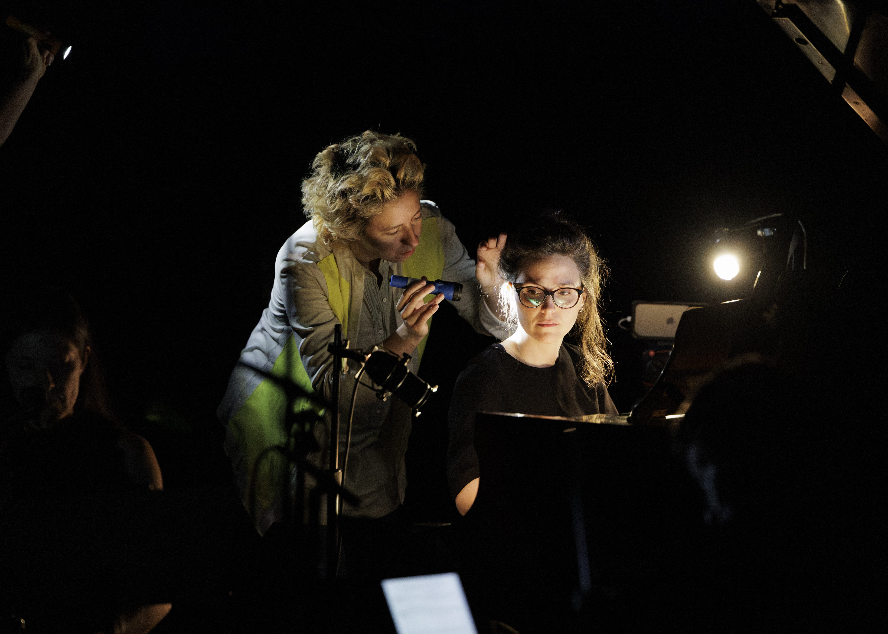

Finland Residency

Five-day creative residency in Finland developing new repertoire and the working version of UMBRAL ZERO, CreArtBox's chamber-theatre piece exploring the moment before sound. The residency culminates in a closed-doors run-through ahead of the autumn New York Series.
Program
- ★ CreArtBoxUMBRAL ZERO · workshop performances
- Jean SibeliusPiano Quintet in G minor, JS 159 · readings 40'
★ CreArtBox commission · world premiere
Performers
- Guillermo Laportaflute · concept
- Josefina Urracapiano
- CreArtBox stringsstring quartet
About CreArtBox
CreArtBox is a New York–based chamber music and multimedia ensemble founded in 2013, performing at The DiMenna Center for Classical Music and on tour internationally. The ensemble's New York Series presents approximately six productions a year - combining commissioned premieres, reimagined classics, and collaborations with visual artists, filmmakers, and writers.
In parallel, CreArtBox runs Festival ADAR each August in rural Asturias, Spain - an international arts festival pairing chamber music with site-specific performance in churches, hórreos, and mountain villages. Both the New York Series and Festival ADAR are produced by CreArtBox, Inc., a 501(c)(3) non-profit.